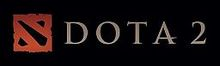

Dota 2 adalah sebuah permainan arena pertarungan daring multipemain, dan merupakan sekuel dari Defense of the Ancients mod pada Warcraft 3: Reign of Chaos dan Warcraft 3: The Frozen Throne. DotA 2 dikembangkan oleh Valve Corporation, terbit juli 2013 dota 2 dapat dimainkan secara gratis pada sistem operasi Microsoft Windows, OS X and Linux. Dota 2 dapat dimainkan secara eksklusif melalui distributor resmi valve, Steam.
Dota 2 dimainkan oleh 2 tim yang beranggota 5 orang pemain, setiap tim memiliki markas yang berada dipojok peta, setiap markas memiliki satu bangunan bernama "Ancient", Di mana tim harus berusaha menghancurkan "Ancient" tim lawan agar dapat memenangkan pertandingan. Setiap pemain hanya dapat mengontrol satu karakter "Hero" yang berfokus pada menaikan level, mengumpulkan gold, membeli item dan melawan tim lawan untuk menang.
Pengembangan Dota 2 dimulai sejak tahun 2009. Ketika pengembang mod DotA, Icefrog, dipekerjakan oleh Valve sebagai lead designer. Dota 2 dipuji oleh kritikus karena gameplay-nya, kualitas pembuatan dan kesetiaan pada gameplay pendahulu (DotA mod Warcraft 3).tetapi Dota 2 juga menuai kritik sebagai game yang susah dipelajari dan para pemain yang tidak ramah.Sampai pertengahan 2017 Dota 2 menjadi game yang memiliki aktivitas pemain paling banyak di Steam, dengan pucak 800,000 pemain online bersamaan setiap hari. Namun telah disusul game PUBG (Player unknown's battle ground) yang memiliki aktivitas pemain sampai 1 juta setiap harinya
|  | |
| Pengembang | Valve Corporation |
| Penerbit | USA: Valve Corporation ,Tiongkok: Perfect World ,ROK: Nexon Co. Ltd. ,JPN: Nexon Co. Ltd. |
| Pengarah | Erik johnson |
| Perancang | Ice frog |
| Penulis | Chet Faliszek, ,Ted Kosmatka ,Marc Laidlaw |
| Komponis | Jason Hayes, Tim Larkin, Chance Thomas |
| Seri | Dota |
| Engine | Source |
| Platfom | Microsoft Windows,OS X,Linux |
| Tanggal Rilis | Microsoft Windows 9July 2013, OS X & Linux 18 July 2013 |
| Genre | Arena pertarungan daring multipemain |
| Mode | Multipemain |
The International adalah turnamen kejuaraan dunia esports tahunan untuk video game Dota 2 , yang diselenggarakan dan diproduksi oleh pengembang game Valve . The International pertama kali diadakan di Gamescom sebagai acara promosi untuk game tersebut pada tahun 2011, dan sejak itu diadakan setiap tahun dengan pengecualian tahun 2020 karena pandemi COVID-19 . Turnamen ini terdiri dari 20 tim; 12 berdasarkan hasil akhir dari Dota Pro Circuit dan enam lagi dari pemenang playoff regional dari Amerika Utara , Amerika Selatan , Asia Tenggara , Cina , Eropa Timur, dan wilayah Eropa Barat .
Kumpulan hadiah turnamen telah didanai melalui sistem battle pass dalam game sejak 2013, dengan seperempat dari semua pendapatan darinya langsung mendanai acara tersebut. Internasional memiliki kumpulan hadiah turnamen tunggal terbesar dari semua acara esport, dengan yang terbaru mencapai US$ 40 juta. Juara terbaru adalah Team Spirit , dengan OG menjadi satu-satunya pemenang berulang dalam sejarah turnamen.
| Tahun | Pemenang | The Internasional 1(2011)Natus Vincere | |
| The Internasional 2(2012)Invictus Gaming | |
| The Internasional 3(2013)Alliance | |
| The Internasional 4(2014)Newbee | |
| The Internasional 5(2015)Evil Geniuses | |
| The Internasional 6(2016)Wings Gaming | |
| The Internasional 7(2017)Team Liquid | |
| The Internasional 8(2018)OG | |
| The Internasional 9(2019)OG | |
| The Internasional 10(2021)Team Spirit | |